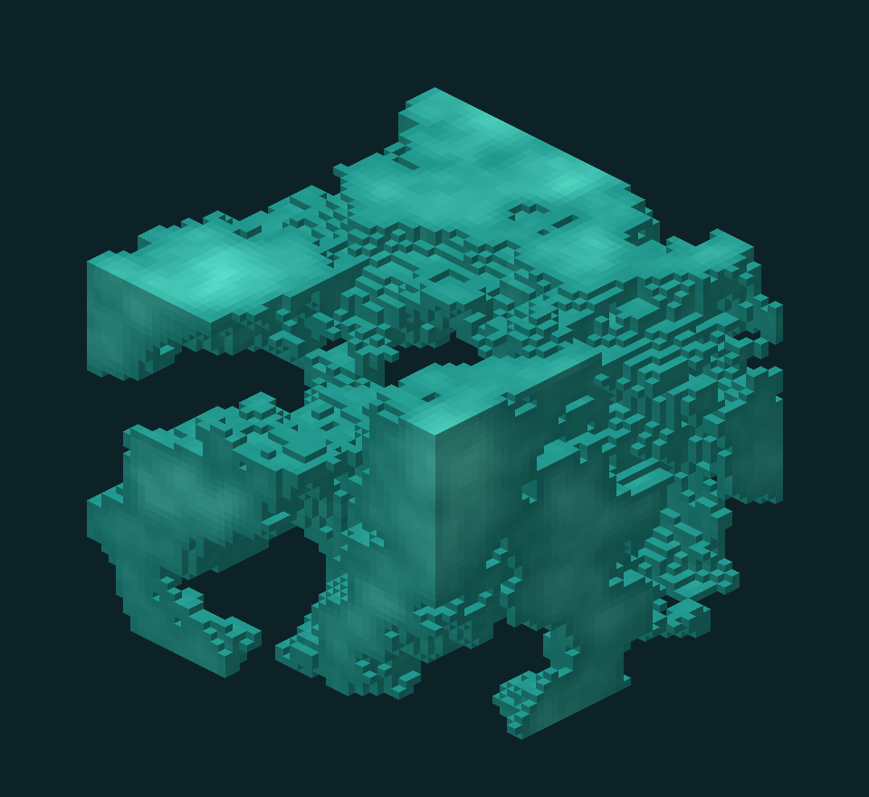
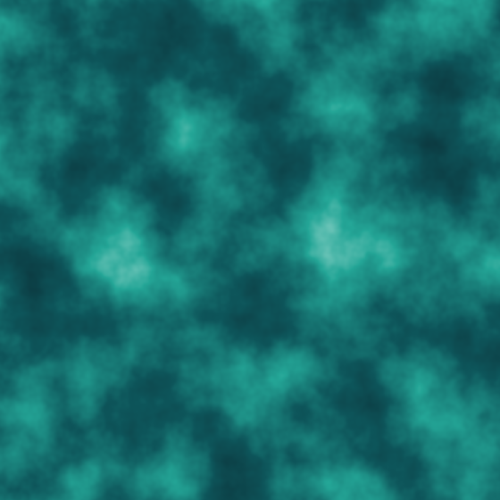
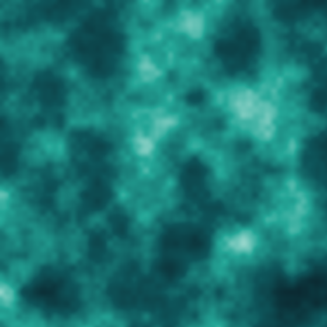
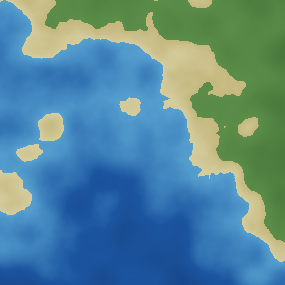
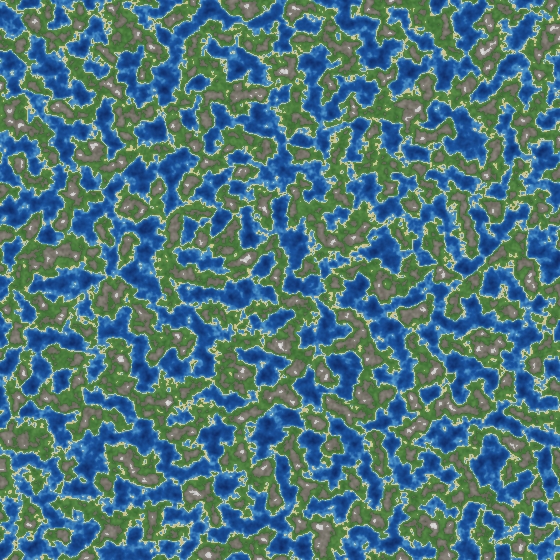
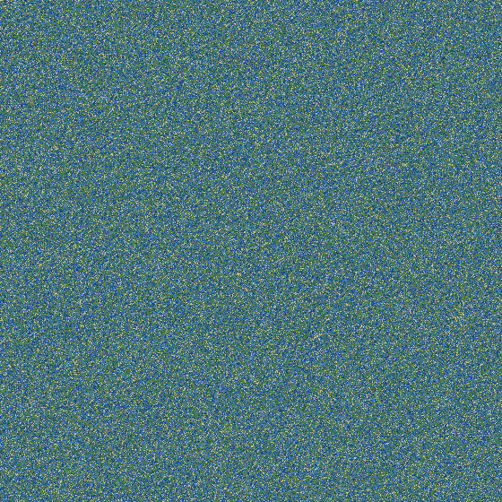

fBm
Adds octaves at increasing frequency and decreasing amplitude. Configure octave count, lacunarity, gain, and weighted strength.
.NET 10 · 2D and 3D · deterministic output
Tedd.FastNoise computes coherent noise directly into contiguous Span<float> buffers. The same kernels execute as scalar code, hardware-width SIMD, or SIMD across multiple cores, with bit-identical output.

GridRegion3D fill, then thresholded and projected as exposed voxels.6 kernelsOpenSimplex2/S, Perlin, Value/Cubic, Cellular
2D + 3DSingle samples, grids, and volumes
X-fastestContiguous output and vector lanes
Exact equalityScalar, SIMD, parallel, x86, and ARM
Primary contract
NoiseGenerator stores the signal configuration. GridRegion2D and GridRegion3D specify the first sample, sample count, and world-space step. Fill writes values in X-major order without allocating.
var densityNoise = new NoiseGenerator(seed: 1337)
{
NoiseType = NoiseType.OpenSimplex2,
FractalType = FractalType.FBm,
Octaves = 5,
Frequency = 0.005f,
};
var region = GridRegion3D.Chunk(
chunkX, 0, chunkZ, chunkSize: 16);
var density = new float[region.SampleCount];
densityNoise.Fill(density, region); // Auto backend
// x + width * (y + height * z)
float voxel = density[x + 16 * (y + 16 * z)];Generated fields
These images are not stock textures. The Pages workflow builds the current library, fills each field, and writes the PNG files. Equal seeds reproduce equal samples.

Five octaves. General terrain and 3D density.

Lower kernel cost; mild axial structure.

No gradient-table lookup. Suitable before thresholding or quantization.

Cell boundaries, cracks, regions, and cave partitions.

Absolute-value folding converts octave minima into sharp ridges.

Continents, ridges, and surface variation evaluated in one fill.
Implemented algorithms
All kernels support 2D and 3D sampling. “Wide” below means the bulk path is instantiated over System.Numerics.Vector<T>. Actual lane width is selected by the runtime and CPU.
| Kernel | Construction | Bulk path | Operational characteristics |
|---|---|---|---|
OpenSimplex2 | Simplex-lattice gradients | Wide | No preferred Cartesian direction; default for 3D density fields. |
OpenSimplex2S | Expanded simplex kernel | Scalar | Smoother response and more corners. Parallel rows remain available; SIMD is disabled because lanes select different branch chains. |
Perlin | Cubic-lattice gradients | Wide | Lower cost than simplex noise. Axis alignment can appear in 3D fields. |
Value | Cubic-Hermite interpolation | Wide | Lowest-cost kernel. No gradient table; lattice structure is more visible. |
ValueCubic | Cubic interpolation over lattice values | Wide | Smooth low-frequency output. Reads 16 lattice values in 2D and 64 in 3D. |
Cellular | Nearest feature points | Wide | Euclidean, squared Euclidean, Manhattan, or hybrid distance; seven return modes from cell value to distance ratios. |
Adds octaves at increasing frequency and decreasing amplitude. Configure octave count, lacunarity, gain, and weighted strength.
Folds each octave around zero and inverts it. The former minima become narrow, high-valued ridges.
Repeatedly folds the octave signal through a bounded interval. Produces bands, terraces, and repeated strata.
OpenSimplex2, reduced simplex, or basic-grid warps; progressive and independent octave modes. The current warp API operates on individual 2D or 3D coordinates.
Bulk execution
The implementation reduces dispatch, temporary memory, and cache-line contention. It does not depend on unsafe numerical shortcuts; fused multiply-add is intentionally excluded to preserve exact cross-backend output.
Auto selects scalar, SIMD, or parallel SIMD from sample count, hardware vector support, and kernel capability. Configuration is snapshotted before row execution.
Rows are contiguous ranges in the destination. Parallel workers receive disjoint row groups, so workers do not write the same cache line.
A ramp generates originX + n × step for all lanes. Y and Z remain broadcast values. No matrix transpose is required.
The scalar and vector implementations instantiate the same generic arithmetic over different operation sets. The scalar path has one lane; the vector path uses the hardware width.
Full vectors are written directly into the caller’s span. A scalar tail handles row widths that are not multiples of the current lane count.
ScalarPortable lane width of one. Used explicitly, on non-vector hardware, and for OpenSimplex2S.
SimdSingle-threaded Vector<float>. Suitable when the buffer is large enough to amortize setup but caller-level scheduling already owns parallelism.
ParallelRow ranges execute through Parallel.For. Default threshold is 16,384 samples to avoid thread-pool overhead on small fills.
GpuDispatch point for an external INoiseAccelerator. Without a registered accelerator, execution falls back through Parallel → SIMD → Scalar. No GPU package is currently shipped.
Determinism
Backend agreement tests compare complete output buffers with exact equality. Scalar and SIMD share kernel source; operation order is fixed; fused multiply-add is not used. This prevents a threshold such as density > 0 from selecting different voxels on clients with different CPUs.
Composition
NoiseStack.Compile() copies generator settings into a flat immutable plan. During a fill, each active layer consumes the current coordinate vector and blends into a register-resident accumulator.
var stack = new NoiseStack
{
Lod = LodPolicy.Automatic with { CullLayers = true },
};
stack.Add(new NoiseLayer
{
Source = new NoiseGenerator(1) { Frequency = 0.0002f, FractalType = FractalType.FBm, Octaves = 4 },
FeatureSize = 2000f,
Name = "continents",
});
stack.Add(new NoiseLayer
{
Source = new NoiseGenerator(2) { Frequency = 0.002f, FractalType = FractalType.Ridged, Octaves = 5 },
Blend = LayerBlend.Add,
Amplitude = 0.4f,
FeatureSize = 200f,
Name = "mountains",
});
var world = stack.Compile(); // immutable and thread-safe
world.Fill(heights, new GridRegion2D(0, 0, 512, 512, Step: 1f));
world.Fill(overview, new GridRegion2D(0, 0, 512, 512, Step: 512f));Blend operatorsAdd, Subtract, Multiply, Min, Max, Replace, and Lerp.
Memory trafficOne output write per sample; the stack does not allocate one field buffer per layer.
Thread modelThe compiled stack is immutable and can be shared by chunk-generation workers.
Level of detail
LodPolicy uses sample spacing, base frequency, lacunarity, and a configurable Nyquist factor to select octave count. It can also reject complete layers by declared feature size.



wavelengthi = 1 / (frequency × lacunarityi)
Keep octave i only while its wavelength satisfies the configured samples-per-wavelength limit.
Configuration tool
The Windows designer edits every generator and stack parameter, renders a 2D field, a lit heightmap, or a thresholded 3D volume, and emits the corresponding C# configuration.

Package
Targets .NET 10. The package contains the managed library, XML documentation, and deterministic symbols.
dotnet add package Tedd.FastNoiseBulk grid and volume generation, compiled layer stacks, SIMD and parallel CPU execution, per-point domain warp, and a pluggable accelerator interface are implemented. A GPU accelerator package and bulk domain-warp fill are not currently shipped.